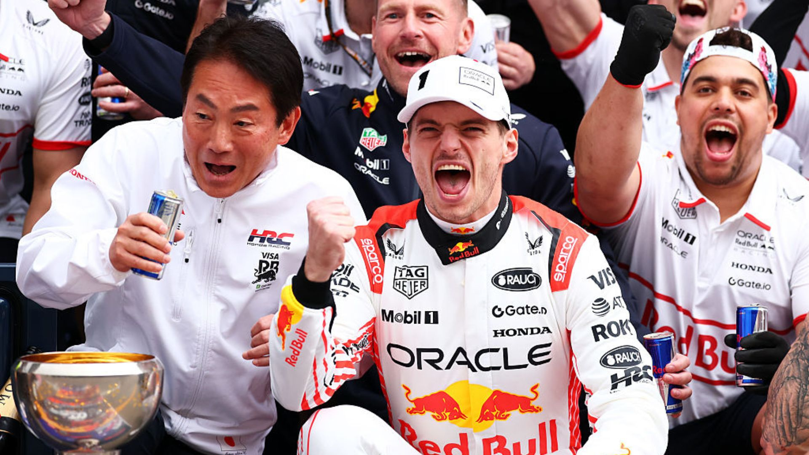
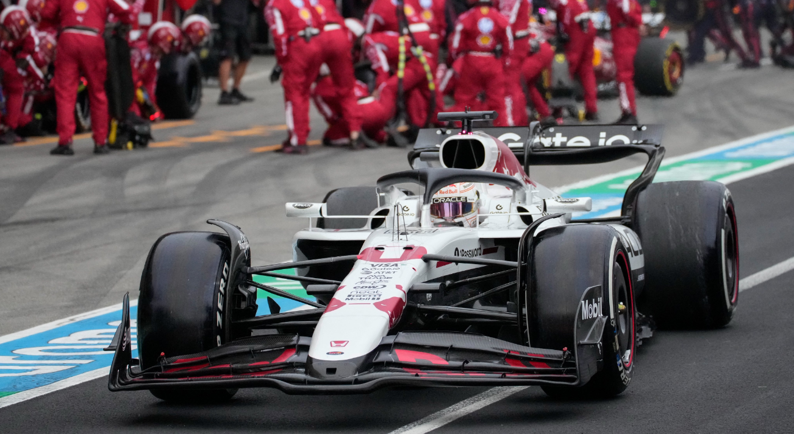

GP do Japão de Fórmula 1 2025: Verstappen Vence em Corrida Marcada por Polêmicas e Estratégias
Alemão da Caravan
Publicada em: 08/06/2025
A Fórmula 1 realizou no último fim de semana o GP do Japão, etapa que trouxe muita emoção, disputas acirradas e reviravoltas na classificação do campeonato de 2025. Max Verstappen, da Red Bull, conquistou a vitória após liderar a maior parte da prova, mas a corrida ficou marcada por incidentes que influenciaram diretamente o resultado final.
Verstappen Domina, Mas Enfrenta Desafios
Max Verstappen largou na pole e liderou as primeiras 21 voltas, mostrando domínio absoluto no circuito de Suzuka. No entanto, entre as voltas 22 e 31, o jovem piloto da Mercedes, Kimi Antonelli, assumiu a liderança por um breve período, antes de Verstappen retomar a ponta até o final da corrida. A vitória de Verstappen foi conquistada com o tempo de 1h22min06s983, garantindo 25 pontos para a Red Bull.
Disputa Acirrada no Pódio

A McLaren brilhou mais uma vez, com Lando Norris e Oscar Piastri completando o pódio em segundo e terceiro lugares, respectivamente. Norris terminou a prova a apenas 1,423 segundos de Verstappen, enquanto Piastri ficou a 2,129 segundos do líder. A dobradinha da McLaren reforça a forte performance da equipe nesta temporada, mantendo a pressão sobre a Red Bull no campeonato